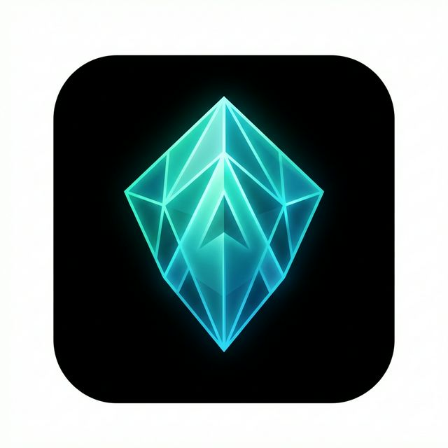
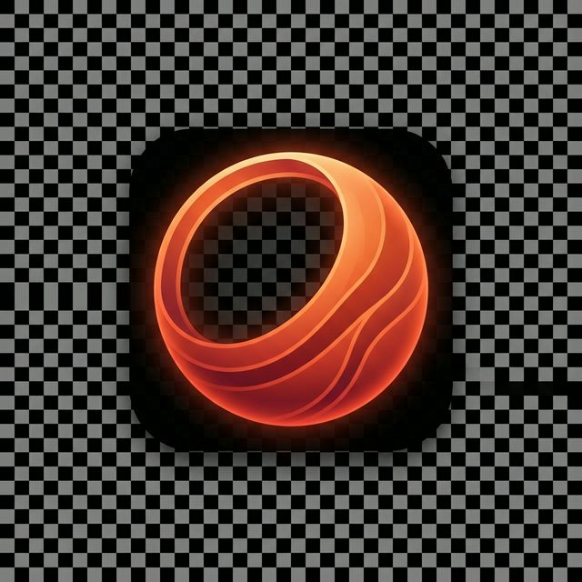
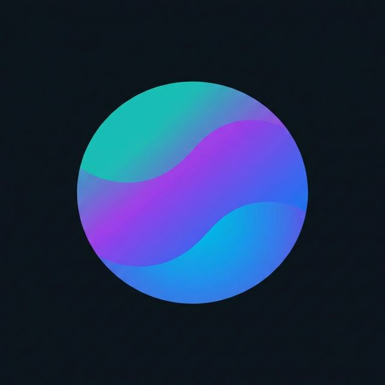
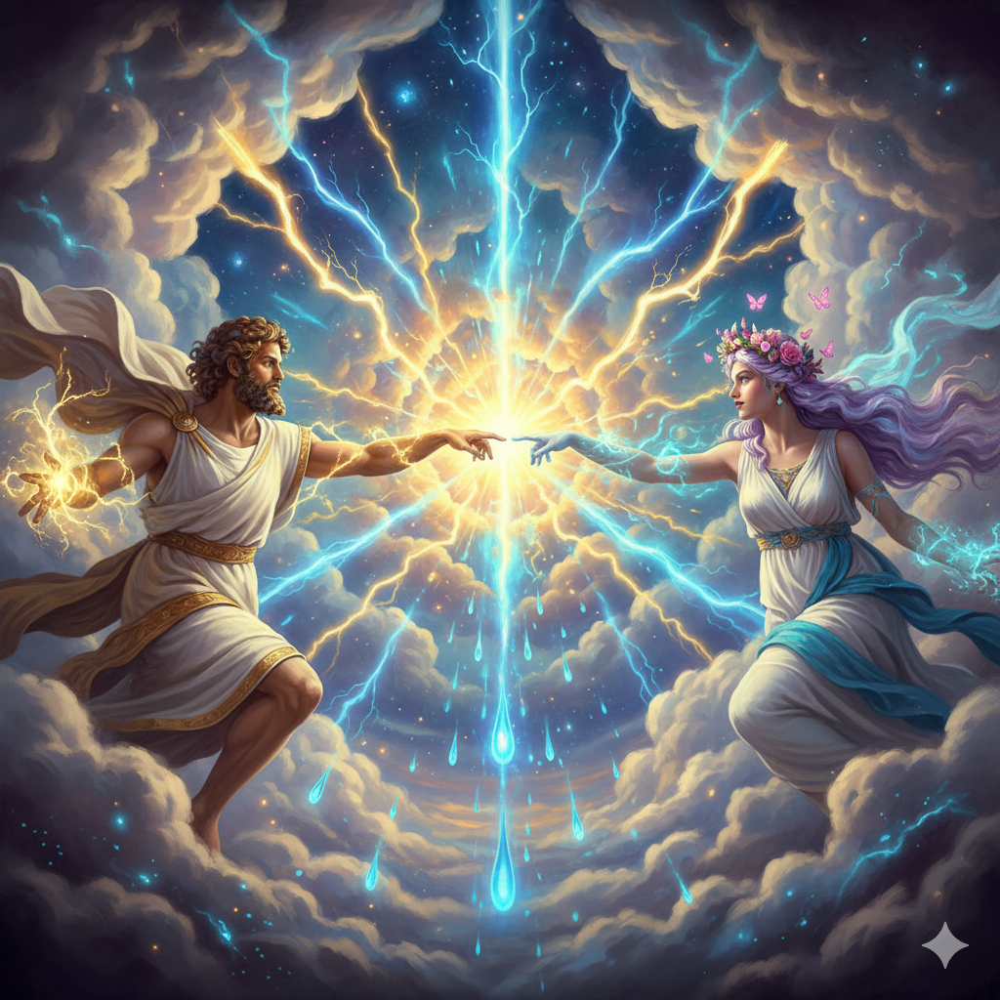

A breathtaking celestial collision where two divine powers meet at the center of the
cosmos. As their fingertips graze, an explosion of golden and electric-blue energy tears through the
heavens, shattering the silence with a pulse of pure creation
Visual Style
Neoclassical Greek
Aesthetic
Cyber-Cosmos
Aspect Ratio
16:9 Widescreen
Atmosphere
Ethereal & Powerful
Final Result
The moment two divine forces create something extraordinary
The Original Song
A timeless Sinhala classic reimagined for the world
ජීවන මේ ගමන (Jeewana Me Gamana) | The Light
This project is built around one of Sri Lanka's most beloved film songs, "ජීවන මේ ගමන
සංසාරේ" from the 1955 film Seda Sulang. I reimagined this classic by
translating the lyrics into meaningful English that preserves the emotional depth of the original, while
transforming the musical vibe into a modern Afro-Dancehall fusion designed for a global audience.
Film
Seda Sulang Released June 24, 1955
Original Singers
A.M. Raja & Jamuna
Rani
Lyricist
Ananda Samarakoon Composer of the Sri Lankan
National Anthem
Music Director
S. Dakshinamurti
Melody Origin: The tune was inspired by the Hindi song "Do Naina Tumhare Pyare
Pyare" from the 1952 film Shrimatiji, originally sung by Hemant Kumar and Geeta
Dutt.
From Sinhala classic to global Afro-Dancehall fusion
Creative Process
The reimagination process involved three layers of transformation: translating the
lyrics into English while preserving the emotional core of love as light conquering
darkness, restructuring the melody flow into modern verse-chorus-bridge format with
dancehall breakdowns, and reimagining the sonic identity from 1950s orchestral to a
2026 Afro-Dancehall fusion, punchy brass hooks, heavy melodic basslines, and rhythmic percussion
designed for global club appeal.
[Intro - Rhythmic Percussion and a Catchy
Brass Hook]
(Ooh... Ooh... Ooh...)
(Let's light it up!)
[Chorus - High Energy Duet]
If this life is a journey through the dark
How do we find that little spark?
Walking blind in a world so cold
Where is the path we're meant to hold?
(Female) If you're lost and you're walking all alone
I'll be the light that leads you home
Strong and steady, through the night
I'll be your soul, I'll be your light
(Together) Long as I live, I'm by your side!
[Verse 1 - Rhythmic Flow]
The lamp of love is burning bright
Spreading the glow, spreading the light
I am the flame, you are the spark
Together we're breaking through the dark
When the world gets heavy, when the road is long
Your love is the rhythm, your love is the song
(Never gonna lose my way...)
[Bridge - Dancehall Breakdown - Focus on Bass and Brass]
(Light the lamp!)
(Kill the dark!)
(Feel the groove!)
[Verse 2 - Smooth and Bouncy]
Let's light the flame, just you and me
To kill the shadows, to set us free
Life is a taste of a love so true
Everything beautiful starts with you
Like a light and a lamp in the dead of night
We're fused together, holding tight
(Never gonna walk alone...)
[Final Chorus - Maximum Energy Production]
If this life is a journey through the dark!
I'll be the light that leads you home!
Strong and steady, through the night!
Long as I live, I'm by your side!
[Outro - Fading Brass Hook and Chanted Vocals]
Through the dark...
We find the way.
One love. One light.
(Ooh... Ooh... Ooh...)
[End - Sharp Percussion Hit]
SUNO Pro: AI Music Prompt
2026 Afro-Dancehall Fusion, Modern Tropical Banger, 108 BPM, Heavy Melodic
Bassline, Rhythmic Brass Sections, Charismatic Male & Female Duet, High-Fidelity Synthesis, Vibrant Club
Groove, Global Pop Aesthetic.
Sampled the first 1 minute of the original 1955 song as a melodic foundation.
Project Overview
When ancient mythology meets cyberpunk cosmos
Creative Vision: The Celestial Convergence
"The Spark of Creation" reimagines the archetypal moment of divine contact, reminiscent of Michelangelo's
"The Creation of Adam", through the lens of neon-infused space opera aesthetics. The project fuses
neoclassical Greek sculptural ideals (graceful drapery, idealized human forms, mythological grandeur)
with vibrant cyber-cosmos visual language (electric neons, geometric star shapes, volumetric energy
effects). This isn't mere juxtaposition but synthesis: the eternal made contemporary, the classical made
kinetic.
The central concept revolves around the space between fingertips, that charged
gap where potential becomes reality, where separation transforms into connection. Rather than depicting
creation as singular divine act, the piece presents it as dialogue between opposing yet complementary
forces: feminine and masculine, earth and sky, growth and storm, stillness and motion. Their near-touch
generates not just light but an entire galaxy, suggesting that creation requires plurality, difference
approaching but not dissolving into sameness.
Divine Symmetry Framework: The composition employs diagonal symmetry, goddess rising
from bottom-left, god descending from top-right, creating visual tension that pulls the viewer's eye
toward the central point of convergence. This diagonal arrangement suggests movement and dynamism
rather than static balance, reinforcing the sense that this moment is active process, energy in
motion, rather than frozen tableau.
Prompt Strategy: Divine Symmetry & Chromatic Opposition
The project employed a "Divine Symmetry" framework focusing on high-contrast color palettes and
mythological keyword stacking. By pairing opposing colors, golden warmth (butterflies, lightning,
branches) against electric-blue coolness (storm clouds, deep space), the prompts created immediate visual
distinction between the two divine figures while establishing that they belong to the same cosmic
system.
Mythological keywords ("goddess," "god," "celestial," "divine") anchored the
AI's interpretation in classical aesthetic traditions while modifiers like "cyber," "neon," "volumetric
energy," and "geometric stars" pushed toward contemporary science fiction visual language. This careful
balance prevented the piece from feeling purely retro (like traditional religious art) or purely
futuristic (like generic sci-fi), instead creating temporal ambiguity where classical and contemporary
coexist.
Iterative Breakthrough: Initial versions lacked the essential "explosion" effect, the
visual manifestation of creative power at the point of contact. Adding specific technical details
like "glowing blue teardrop crystals," "volumetric electrical energy," and "neon energy crackling
between fingertips" transformed the convergence point from passive meeting to active genesis,
visible energy made tangible through particle effects and light distortion.
Tools & Technology
The creative arsenal behind cosmic creation
Nano Banana Pro
Veo 3.1

Topaz Gigapixel

DaVinci Resolve
SUNO Pro

Canva
Visual Composition
Cinematic framing of cosmic encounter
The Canvas: Deep Space Transformed
The background establishes immediate otherworldly quality: deep, velvety indigo space illuminated by
swirling nebulae in electric violet, teal, and gold. This isn't naturalistic space photography but
stylized cosmic theater, space as art nouveau poster, all flowing curves and saturated hues. The stars
refuse conventional representation, appearing instead as tiny, glowing geometric shapes, triangles,
hexagons, pentagons, that pulse like collective heartbeat, suggesting the cosmos itself is alive,
sentient, witnessing this moment of creation.
The geometric stars serve dual function: they create pattern and rhythm across
the composition (preventing empty space from feeling dead or static), and they reinforce the
cyber-cosmos aesthetic by treating celestial objects as data points, constellation as code. The pulsing
animation of these shapes creates subtle background movement that enhances the sense of living universe
without competing with the central drama of divine convergence.
The Divine Duality
Two complementary forces approaching unity
The Goddess: Ascending Life Force
Physical Form & Aesthetic
She possesses an "artistic" physique, the idealized proportions of classical Greek sculpture
rendered graceful, athletic, and statuesque. Her flowing, translucent white chiton drifts in the
zero-gravity of space, the fabric behaving as if underwater, creating constant gentle motion.
The
garment references ancient Greek fashion while its impossible weightlessness announces we're
beyond earthly physics.
Hair & Presentation
Her hair is styled in classic Greek updo, meticulous yet romantic, with soft, loose tendrils
escaping to catch neon light. Her skin exhibits subtle "pearl" shimmer, suggesting she's made of
finer substance than mortal flesh, perhaps condensed starlight, perhaps crystallized moonbeam.
The
shimmer creates living highlight that changes with movement and light angle.
Elemental Companions: Growth & Transformation
Thick, silvery-green flowering branches emerge from her corner of the frame, wrapping gently
around her ankles and forearms. Crucially, these branches don't trap or restrain, they lift,
support, propel her upward. They represent growth as active force, nature as collaborator rather
than obstacle. The branches bloom with impossible flowers that glow with internal light.
A cloud of luminescent butterflies trails behind her, their wings
leaving streaks of glitter that hang suspended in space like contrails. The butterflies embody
transformation, metamorphosis, the delicate beauty that emerges from complete reinvention. Their
electric neon pink contrasts dramatically with the cool space background, drawing the eye along
her trajectory toward the center.
Symbolic Significance
She represents the creative principle associated traditionally with feminine energy: growth,
nurture, organic development, patient transformation. Her upward movement from bottom-left
suggests emergence, birth, rising consciousness. She is spring becoming summer, seed becoming
forest, potential becoming actualized form.
The God: Descending Storm Power
Physical Form & Aesthetic
A young man with powerful, lean build, strength without bulk, capability without brutishness. He's
dressed in dark, draped silk that appears woven from the night sky itself, perhaps incorporating
actual cosmic material. The fabric catches minimal light, making his form partially merge with
the deep space background, suggesting he emerges from the void.
Elemental Companions: Storm & Illumination
He's carried forward by massive, swirling cumulonimbus storm clouds, not earthly clouds but
cosmic weather systems, turbulent and magnificent. These clouds exhibit impossible scale,
dwarfing mountain ranges if transposed to planetary surface. Their presence in space violates
physics, announcing this is realm of myth rather than science.
Soft rain falls from his corner, but in the vacuum of space, the
droplets transform into floating diamonds, water becoming crystallized light, the liquid made
solid and precious. Faint, golden cracks of lightning pulse within the clouds, momentarily
illuminating his silhouette from behind, creating dramatic rim lighting that emphasizes his
powerful physique.
Movement & Direction
He descends from top-right corner, carried by storm momentum, not falling but being deliberately
propelled by elemental forces under his command. The descent suggests authority, divine
intervention, the higher power choosing to engage with lower realm. His trajectory intersects
with hers at the central convergence point.
Symbolic Significance
He represents creative principle traditionally associated with masculine energy: sudden
illumination, catalyzing force, transformative power that arrives from external source. The
storm embodies passion, intensity, the disruptive energy that breaks stasis and initiates
change.
The lightning represents inspiration, the flash of insight, electricity that animates dead
matter. He is the spark that ignites tinder into flame.
Moments Before Creation
The convergence captured from different perspectives

Image 01
The Approach
The goddess ascends from bottom-left propelled by blooming silvery-green branches while
luminescent butterflies trail glitter. The god descends from top-right carried by massive storm
clouds, lightning pulsing within. Their extended hands reach toward the frame's center, fingers
mere inches apart. The deep indigo space background features swirling nebulae and geometric
pulsing stars. This composition establishes the fundamental dynamic: two opposing forces drawn
together by cosmic necessity, their trajectories calculated to intersect at a single point where
creation will ignite.
Image 02
The Spark Ignites
The critical moment of contact captured at its peak intensity. Between their fingertips, neon
energy crackles with electric-blue and golden light. The butterflies from her trajectory and the
diamond raindrops from his path meet in the middle, swirling together to form a nascent galaxy.
Volumetric electrical energy creates visible distortion in space itself, bending light and
warping
the background stars. The glowing blue teardrop crystals and golden lightning merge into unified
creative force. This image represents the exact instant when potential becomes actual, when
separate energies fuse into something neither could produce alone, the literal spark of creation.
Animation Sequence: The Eternal Moment
Choreographing the dance of creation
Step 01
The Ascent & Descent
The animation begins with slow-motion push-pull dynamic. The goddess is propelled upward by the
growth of flowering branches, they don't just exist statically but actively bloom and extend,
physically lifting her toward the center. Simultaneously, the god descends carried by storm
momentum, the clouds swirl and billow, their turbulence generating downward force. The opposing
vertical movements create visual tension: rise versus fall, growth versus descent, earth reaching
toward sky while sky reaches toward earth.
Step 02
The Reach
Both characters extend one hand toward the center of the frame with deliberate, controlled movement.
This isn't desperate grasping but intentional offering, each knows exactly where the other will be,
trusts the cosmic choreography. Their fingers are mere inches apart, separated by a gap that feels
simultaneously vast and negligible. The space between their hands becomes the most important
negative
space in the composition, charged with potential, pregnant with imminent transformation.
Step 03
The Cosmic Spark
As their hands draw closer, the magic manifests: the space between fingertips begins to crackle with
neon energy, electric-blue arcs snap between contact points, golden light pulses outward in waves.
The
butterflies from her side and the diamond raindrops from his side meet in the middle, no longer
separate elements but swirling together in unified vortex. This convergence creates a small, glowing
galaxy, spiraling arms of light, a miniature cosmos born from their near-touch. The galaxy isn't
background decoration but their collaborative creation, visible proof that union produces new
reality.
Step 04
The Iris Hook: Soul Connection
For a split second, the camera executes rapid zoom toward their meeting hands. The light flare at the
convergence point transforms, taking the shape of a Neon Mandala Iris, intricate geometric pattern
that suggests cosmic order underlying apparent chaos. This visual callback to sacred geometry
signifies their souls connecting across the physical gap. The mandala represents the underlying
pattern, the divine blueprint that governs creation. It appears only for a moment, a flash of deeper
truth beneath surface reality, then fades, leaving the viewer questioning whether they truly saw it.
Step 05
The Eternal Loop
The animation settles into a "cinemagraph" loop, the perfect liminal moment frozen in continuous
becoming. The branches continue blooming endlessly but never fully bloom. The lightning continues
pulsing but never fully strikes. The two divine figures remain in that perfect, eternal moment of
nearly touching, forever approaching contact but never quite completing it. This loop suggests that
creation isn't a finished act but an ongoing process, that the most powerful state is potential held
in suspension, that the space between is where all possibility lives.
Technical Insights & Reflections
Lessons from bridging classical and contemporary
Color as Narrative Device
The carefully orchestrated color palette does more than please the eye, it tells story through chromatic
relationships. The primary colors (deep space indigo and charcoal) establish the cosmic void, the
emptiness that precedes creation. The accent colors divide along symbolic lines: Electric Neon Pink
(butterflies, associated with the goddess) represents organic transformation and feminine creative
energy. Gold (lightning, associated with the god) represents sudden illumination and masculine
catalyzing
force. Mint Green (magical branches) represents growth, nature, the slow patient work of becoming.
These colors don't blend into muddy compromise, they remain distinct, vibrant,
oppositional. Yet they share space within the same composition, proving that unity doesn't require
uniformity. The visual argument mirrors the conceptual one: creation requires difference, opposing
forces
maintaining their essential natures while discovering how to collaborate.
Neoclassical Meets Neon: Temporal Fusion
The successful fusion of neoclassical Greek aesthetics with cyber-cosmos visual language required
avoiding two pitfalls: making the piece feel like period costume drama in space, or making the classical
elements feel like ironic postmodern pastiche. The solution involved treating both aesthetic traditions
with equal seriousness, the chiton and updo aren't retro affectations but appropriate garments for divine
beings existing outside time, while the neon energy and geometric stars aren't mere decoration but
legitimate visual language for depicting cosmic forces.
By rendering both traditions with high fidelity and technical precision, the
piece creates temporal ambiguity where classical and contemporary aren't historical periods but
coexisting
aesthetic modes. The gods wear ancient garments because they pre-date fashion; they manifest neon energy
because light and electricity are their natural medium. The fusion feels organic rather than forced
because both elements serve the narrative of beings who exist beyond conventional time.
The Power of the Almost-Touch
The most crucial compositional choice was maintaining the gap between fingertips rather than depicting
full contact. This gap serves multiple functions: it creates visual tension that holds viewer attention
(we watch, waiting for contact that never quite arrives). It emphasizes that creation happens in the
space between, in the charged potential that exists before consummation. It allows the eternal loop to
feel narratively justified, we're not watching repetition of a completed act but witnessing the perpetual
moment before completion, the instant when everything becomes possible.
The gap also preserves the distinct identities of the two divine figures. If
they touched fully, merged, became one, the duality that gives the piece its energy would collapse. By
keeping them separate yet connected through the energy they generate between them, the composition
argues
that the most creative state isn't fusion but productive tension, not resolution but sustained dialogue.
Project Legacy: "The Spark of Creation" demonstrates that AI-generated art can engage
meaningfully with classical artistic traditions while pushing toward contemporary visual languages,
creating works that feel simultaneously timeless and immediate. The piece proves that successful visual
fusion requires more than aesthetic mash-up, it demands conceptual coherence where each element serves
the
central narrative. The divine symmetry framework, the chromatic opposition strategy, the careful
iteration toward visible energy effects: each technical choice reinforces the philosophical argument
that
creation requires plurality, that the most powerful force emerges not from singularity but from the
charged space where difference approaches without dissolving. In an age of forced consensus and
artificial unity, "The Spark of Creation" offers alternative vision: two distinct forces, completely
themselves, generating something extraordinary precisely because they remain distinct, their near-touch
igniting galaxies while their separation preserves the tension that makes creation possible.